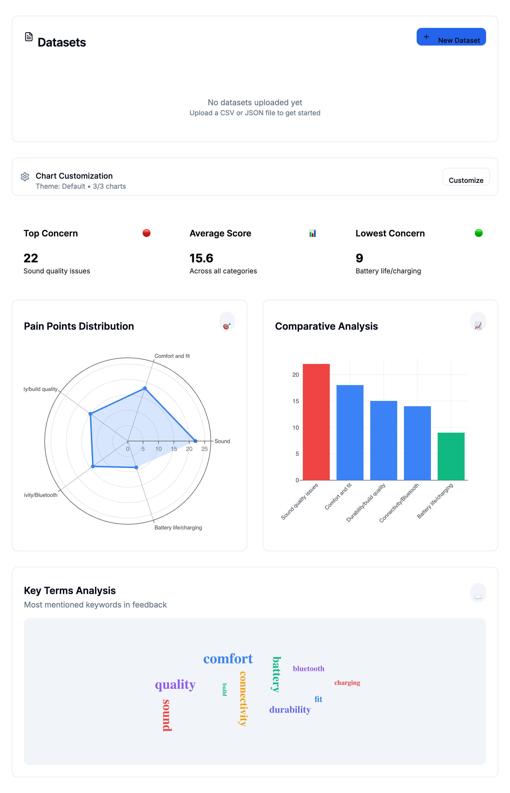

Analytics
Python, SQL, Tableau, Microsoft Excel, Business Central
Open to Analyst Roles
I am Trang Hoang, a Finance and Operations Analyst with hands-on experience in forecasting, KPI systems, and workflow optimization. I focus on turning complex data into decisions that reduce cost, improve accuracy, and speed up execution.
I combine business context with technical analysis to help teams make better operating decisions. My background spans finance operations, process improvement, and analytics for manufacturing and multi-unit restaurant environments.
At Sunrise Soya Foods, I analyze 3M+ data points to support planning decisions and built predictive models that improved budget accuracy by 13%. I also design reporting workflows that reduce manual effort and increase leadership visibility.
Python, SQL, Tableau, Microsoft Excel, Business Central
Forecasting, KPI design, cost analysis, variance analysis, reporting
POS/CRM workflows, payroll data integration, process automation
Media, creator, and consumer-insight work that connects brand storytelling with business goals.

Consumer Insight Project
I used Perplexity for market research and paired it with AI-assisted analysis to organize customer feedback into a dashboard focused on recurring pain points, comparative concerns, and keyword trends.
The output translated raw audience feedback into a clearer view of product perception, helping frame positioning opportunities around sound quality, comfort, connectivity, and battery experience.
Media Partnership
Supported brand visibility for Pho & Roll through local media placements that helped position the restaurant as both a new Vancouver dining destination and a polished venue for corporate events.
This work strengthened third-party credibility by aligning the brand with editorial storytelling around launch momentum, group dining, and premium Vietnamese hospitality.
Influencer Marketing
Collaborated with creators on Instagram post and reel content to showcase the dining experience in a format designed for discovery, engagement, and social proof.
The campaign highlighted food presentation, atmosphere, and shareable moments to help the restaurant reach new audiences through lifestyle-led content rather than traditional advertising alone.
Selected work across finance, operations, analytics, and marketing strategy.
I am currently applying for analyst roles and would love to discuss how I can support your team with data-driven decision making and operational improvements.